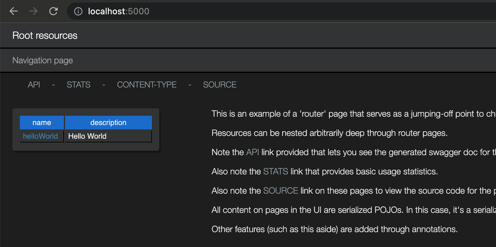
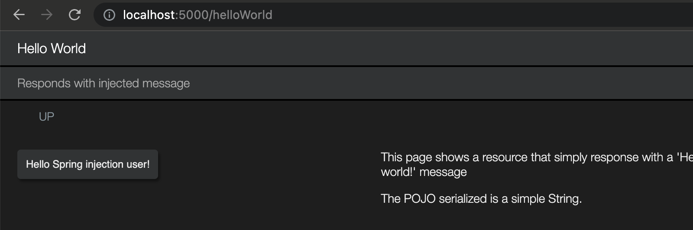

The juneau-marshall
and juneau-marshall-rdf
modules provides memory-efficient typed and untyped POJO serializing and parsing for a variety of languages.
// A simple bean
public class Person {
public String name = "John Smith";
public int age = 21;
}
// Produces:
// "{"name":"John Smith","age":21}"
String json = Json.of(new Person());
// Parse back into a bean.
Person person = Json.to(json, Person.class);
// Various other languages.
String json5 = Json5.of(person);
String xml = Xml.of(person);
String html = Html.of(person);
String urlEncoding = UrlEncoding.of(person);
String uon = Uon.of(person);
String openApi = OpenApi.of(person);
String rdfXml = RdfXml.of(person);
String rdfXmlAbbriev = RdfXmlAbbrev.of(person);
String n3 = N3.of(person);
String nTriple = NTriple.of(person);
String turtle = Turtle.of(person);
String plainText = PlainText.of(person);
String csv = Csv.of(person);
byte[] msgPack = MsgPack.of(person);
The juneau-rest-server
and juneau-rest-client libraries
provide server and client side REST capabilities that can be used by themselves, or together to create
simplified yet sophisticated Java-based REST communications layers that completely hide away the complexities
of the REST protocol from end-users.
// Server-side endpoint
@Rest(path="/petstore")
public class PetStoreRest extends BasicRestServlet implements BasicUniversalConfig {
@RestPost(path="/pets", guards=AdminGuard.class)
public Ok addPet(
@Content CreatePet createPetBean,
@Header("E-Tag") UUID etag,
@Query("debug") boolean debug
) throws BadRequest, Unauthorized, InternalServerError {
// Process request here.
return Ok.OK; // Standard 400-OK response.
}
}
// Client-side Java interface that describes the REST endpoint
@Remote(path="/petstore")
public interface PetStoreClient {
@RemotePost("/pets")
Ok addPet(
@Content CreatePet createPet,
@Header("E-Tag") UUID etag,
@Query("debug") boolean debug
) throws BadRequest, Unauthorized, InternalServerError;
}
// Use a RestClient with default JSON 5 support and BASIC auth.
RestClient client = RestClient.create().json5().basicAuth(...).build();
// Instantiate our proxy interface.
PetStoreClient store = client.getRemote(PetStoreClient.class, "http://localhost:10000");
// Use it to create a pet.
CreatePet createPet = new CreatePet("Fluffy", 9.99);
Pet pet = store.addPet(createPet, UUID.randomUUID(), true);
The juneau-dto module
contains several predefined POJOs for generating commonly-used document types that
are designed to be used with the Juneau Marshaller APIs for both serializing and parsing.
For example, you can build HTML DOMs in Java.
import static org.apache.juneau.dto.html5.HtmlBuilder.*;
// An HTML table
Object mytable =
table(
tr(
th("c1"),
th("c2")
),
tr(
td("v1"),
td("v2")
)
);
String html = Html.of(mytable);
<table>
<tr>
<th>c1</th>
<th>c2</th>
</tr>
<tr>
<td>v1</td>
<td>v2</td>
</tr>
</table>
The juneau-config
module contains a powerful API for creating and using INI-style config files.
# A set of entries
[Section1]
# An integer
key1 = 1
# A boolean
key2 = true
# An array
key3 = 1,2,3
# A POJO
key4 = http://bar
// Create a Config object
Config config = Config.create().name("MyConfig.cfg").build();
// Read values from section #1
int key1 = config.getInt("Section1/key1");
boolean key2 = config.getBoolean("Section1/key2");
int[] key3 = config.getObject("Section1/key3", int[].class);
URL key4 = config.getObject("Section1/key4", URL.class);
The juneau-assertions
module in Juneau is a powerful API for performing fluent style assertions.
import static org.apache.juneau.assertions.Assertions.*;
// Check the contents of a string.
// "as" methods perform a transformation.
// "is" methods perform an assertion.
assertString("foo, bar")
.asSplit(",")
.asTrimmed()
.is("foo", "bar");
// Extract a subset of properties from a list of beans and compare using Simplified JSON.
List<MyBean> myListOfBeans = ...;
assertBeanList(myListOfBeans)
.asPropertyMaps("a,b")
.asJson().is("[{a:1,b:'foo'}]");
The juneau-rest-springboot
modules provides servlets for quickly and seemlessly deploying REST endpoints in a Spring Boot application. Has built-in support for
auto-generated Swagger documentation and call statistics on all endpoints.
@SpringBootApplication
@Controller
public class App {
//Entry point method.
public static void main(String[] args) {
new SpringApplicationBuilder(App.class).run(args);
}
// Our root REST bean.
// Note that this must extend from SpringRestServlet to allow use of injection.
// All REST objects are attached to this bean using the Rest.children() annotation.
@Bean
public RootResources getRootResources() {
return new RootResources();
}
// Registers our REST bean at the URI root.
@Bean
public ServletRegistrationBean<Servlet> getRootServlet(RootResources rootResources) {
return new ServletRegistrationBean<>(rootResources, "/*");
}
// Injected child resource.
@Bean
public HelloWorldResource getHelloWorldResource() {
return new HelloWorldResource();
}
// Injected child bean used in injected child resource.
@Bean
public HelloWorldMessageProvider getHelloWorldMessageProvider() {
return new HelloWorldMessageProvider("Hello Spring injection user!");
}
}
Our root resource servlet serves as a router page. It is defined as follows:
@Rest(
title="Root resources",
description="Example of a router resource page.",
children={
HelloWorldResource.class,
}
)
@HtmlDocConfig(
widgets={
ContentTypeMenuItem.class
},
navlinks={
"api: servlet:/api",
"stats: servlet:/stats",
"$W{ContentTypeMenuItem}",
"source: $C{Source/gitHub}/org/apache/juneau/examples/rest/$R{servletClassSimple}.java"
},
aside={
"<div class='text'>",
" <p>This is an example of a 'router' page that serves as a jumping-off point to child resources.</p>",
" <p>Resources can be nested arbitrarily deep through router pages.</p>",
" <p>Note the <span class='link'>API</span> link provided that lets you see the generated swagger doc for this page.</p>",
" <p>Also note the <span class='link'>STATS</span> link that provides basic usage statistics.</p>",
" <p>Also note the <span class='link'>SOURCE</span> link on these pages to view the source code for the page.</p>",
" <p>All content on pages in the UI are serialized POJOs. In this case, it's a serialized array of beans with 2 properties, 'name' and 'description'.</p>",
" <p>Other features (such as this aside) are added through annotations.</p>",
"</div>"
},
asideFloat="RIGHT"
)
public class RootResources extends BasicSpringRestServletGroup implements BasicUniversalConfig {
// No code!
}

The HelloWorldResource class shows an example of a child resource
defined as an injected bean.
@Rest(
title="Hello World",
description="An example of the simplest-possible resource",
path="/helloWorld"
)
@HtmlDocConfig(
aside={
"<div style='max-width:400px' class='text'>",
" <p>This page shows a resource that simply response with a 'Hello world!' message</p>",
" <p>The POJO serialized is a simple String.</p>",
"</div>"
}
)
public class HelloWorldResource extends BasicRestObject implements BasicUniversalConfig {
@Inject
private HelloWorldMessageProvider messageProvider;
@RestGet(path="/*", summary="Responds with injected message")
public String sayHello() {
return messageProvider.get();
}
}

Other features:
-
Fast memory-efficient serialization.
-
Fast, safe, memory-efficient parsing. Parsers are not susceptible to deserialization attacks.
-
KISS is our mantra! No auto-wiring. No code generation. No dependency injection. Just add it to your classpath and use it. Extremely simple unit testing!
-
Enjoyable to use
-
Tiny - ~1MB
-
Exhaustively tested
-
Lots of up-to-date documentation and examples
-
Minimal module dependencies making them optimal for uber-jars
-
Built on top of Servlet and Apache HttpClient APIs that allow you to use the newest HTTP/2 features
such as request/response multiplexing and server push.